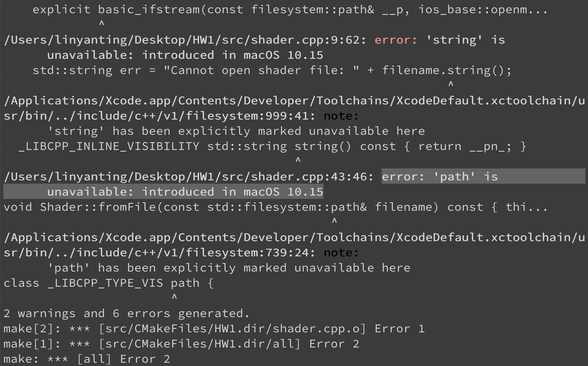
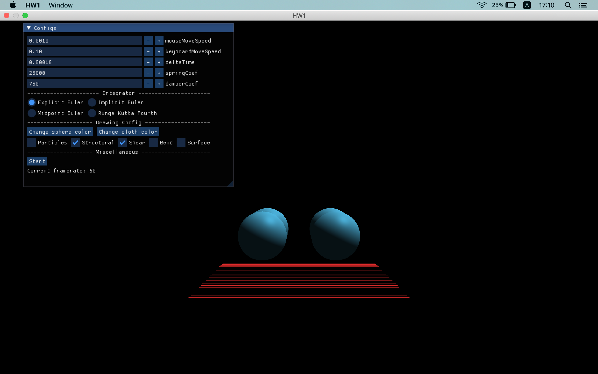

這兩天花了 8 小時 55 分鐘又 48 秒的「專注時間」在弄電腦動畫與特效的作業，有點心得！
前面廢話
因為這個作業的關係，我預期我這兩天應該「沒辦法」弄 side project 或是其他跟職涯有關的事情，果真，在正式開始寫作業 code 之前，我就花了非常多時間在「讓我的 mac 能順利跑起來作業程式」這件事情上⋯⋯
原本以為只需要煩惱怎麼寫 code 而已，還真沒想到說還得處理寫 code 之前的「讓程式跑起來」，加上又很難分點心思在職涯方面，覺得自己怎麼又沒新進度，那整個過程實在是非常挫折和煎熬。
然而，現在回頭來看 (雖然也才最近而已xD)，我覺得這個挑戰還挺不錯的，讓我有了一點體悟，或許，這份體悟也能夠對我的職涯路上有所幫助呢！
一開始
之前助教就有說過用 mac 寫作業會很麻煩，所以我就決定去系上的電腦教室寫作業。
我們作業有討論區，開始寫之前，好奇點開來看，咦，有人發問「Mac版本不支援此專案類型」欸！
根據裡面的討論，加上那位同學後來也沒繼續追問下去，應該是解決了，感覺 mac 好像只要照 README.md 裡面的指令打一打就可以用 cmake 來 build 了🤔
於是乎，我跟著打指令，沒想到⋯⋯

噴出了錯誤，而且上面居然寫 introduced in macOS 10.15！
完蛋，我 macOS 的版本是 10.14.6，但我不想更新啊😂
因此，我就鼓起勇氣 (怕被笑這什麼笨問題的心理作祟)，在討論區發問「macOS 10.15 以下(不含) 的版本是否真的得更新作業系統才能做作業」，問助教難道只能更新而不能靠其他方法解決嗎？
真希望助教能給出直接明確又能順利解決的解方啊！（錯誤的心理xD）
似乎有點希望
助教回覆說，因為 filesystem 是 C++17 的東西，可能是編譯器沒支援。
建議我可以在 cmake 的指令後方加上-DCMAKE_C_COMPILER=YOUR_GCC_PATH -DCMAKE_CXX_COMPILER=YOUR_G++_PATH
「或是去改一下找 file path 的 code 也可以」。
人生真的是不斷在做選擇，有些 maybe 比較好，有些 maybe 比較差，而這次我選擇忽略後者嘗試前者。
從現在的視角來看，二擇一的岔路，我選擇了崎嶇的那一條。（但或許更有收穫也說不定）
後來我指令改成cmake -DCMAKE_C_COMPILER=/usr/bin/gcc -DCMAKE_CXX_COMPILER=/usr/bin/g++ --build build --config Release --parallel 8
在輸入到終端機前，我內心想：「這一插曲終於能夠落幕了⋯⋯」
嗯嗯很好，看起來 C 和 CXX 編譯器的確都改了！
於是又再下下一個指令。
哭啊，還是一樣的錯誤⋯⋯ 明明編譯器已經改了啊？
於是我決定再繼續追問下去！甚至還多問「去改一下找 file path 的 code」這個部分，想說多了解，或許也是一條不錯的路🤔
助教高明
真不愧是助教，看到我的截圖 (上上一張)，立馬點出了問題！
他說：「你還是用Xcode (AppleClang) 阿，看看最上面第一行和第二行的compiler ID。」
我居然沒注意到，可見在程式開發上，有些 message 或 log 不要漏看會比較好。
然後建議我：「MacOS 上的/usr/bin/gcc 預設是指到 Xcode 的 AppleClang。所以假設你是用 gcc 11 你要找找看 gcc-11 在哪裡而不是用 gcc。」
（中間過程真的百般曲折就不贅述了）
後來 brew install gcc@11 裝相關工具，然後找到了 gcc-11、g++-11 分別在哪，又找到了這篇說可以加上參數，最後，我的指令變成這樣：
1 | cmake -S . -B build -D CMAKE_BUILD_TYPE=Release -DCMAKE_C_COMPILER='/usr/local/bin/gcc-11' -DCMAKE_CXX_COMPILER="/usr/local/bin/g++-11;-std=c++17" |
看起來好像有設定到 C++17 (?)
然後再下 cmake --build build --config Release --parallel 8 居然冒出了新的錯誤⋯⋯
我就在討論區跟助教說：「可能是沒設定好 include library 之類的關係，但我可能就先停在這邊了，謝謝助教的提示！」
不行，我已經花非常多時間在這上頭了，如果今天作業沒 deadline、我沒其他事要做，那繼續研究還 OK，但情況不是這樣啊xD
有時候，選擇放棄，換走另外一條路，也是不錯的選擇！
另闢蹊徑
我決定嘗試「或是去改一下找 file path 的 code 也可以」的方法了！
問了助教：「剛剛 trace 了一下 code，是不是只有 findPath() 這個 function 會用到 filesystem 的東西呢？如果直接把 assets 的路徑寫死是不是就能解決了呢？」
助教回覆：「是的，不過最好加上個你自己的 define guard」
雖然現在看來輕鬆，但當時依舊忐忑不安，連最重要作業的 code 都還沒開始動工，而我卻還在弄這些五四三？
我當時害怕極了。
（嘗試中）
哇嗚，令我驚訝的是，我居然只花了 16 分 19 秒就搞定了，怎麼跟前面的方法差那麼多啊😂
Built 成功！

看到畫面上出現球球和布料，豪感動啊啊啊～
回饋
受到討論區和助教的 carry，怎能不回饋呢？
雖然可能沒有人像我一樣用比較舊的 mac 寫作業，但我還是 share 了我做了哪些改動來讓程式能順利跑起來：
main.cpp
- 第 78 行的「 findPath(“sphere.vert”) 」改成「 “/path/to/sphere.vert” 」
- 第 79、91、92 行也一樣
utils.h
- 註解掉第 2、57 行（分別是 filesystem 標頭檔、findPath 函式）
utils.cpp
- 註解掉第 8~22、67～70 行（findAssetPath、findPath）
shader.h
- 第 18 行的「 std::filesystem::path 」改成「 std::string 」
shader.cpp
- 第 6 行的「 std::filesystem::path 」改成「 std::string 」
- 註解掉第 8~16 行
- 第 43 行的「 std::filesystem::path 」改成「 std::string 」
改完之後再下最一開始「乾淨」的指令：
cmake -S . -B build -D CMAKE_BUILD_TYPE=Releasecmake --build build --config Release --parallel 8
就可以了！
非常謝謝助教的幫忙！
後記
解決在 mac 上面跑程式的問題以後，就開始寫作業 code！
對了，和弄作業的第一天相比，第二天的焦慮感淡了不少，我想，應該是因為我有做到下面那張圖闡述的哲理吧？

我每次做困難任務的時候，都會幫自己計時，一方面是想讓自己有「進度在前進」的感覺，一方面可以在回顧當天的時候知道自己都做了些什麼，而不是「明明有做事情卻覺得自己都在瞎忙」。
第一天，我完全是用「電腦動畫與特效 HW1」的名義來行動，什麼意思？看第二天就會懂了。
第二天，我不是單純「電腦動畫與特效 HW1」，而是細分成：
雜項、trace code、再嘗試用 mac 跑跑看、最後回報給助教決定不再追根究底了、
試著寫死路徑跑跑看、剛剛的過程整理成小筆記並回報到討論區、void Cloth::initializeSpring()、void Cloth::computeSpringForce()
宣告完當下要做哪個細項以後，再開始計時行動。
我覺得這麼做讓我內心輕鬆了不少，我想，是因為這讓我更加明確當下的自己在做什麼吧？而不是整坨糊在一起的雜亂無章感！
或許，之後遇到任何困難事，也可以嘗試這樣去 approach，不要因為它「充滿未知數」而感到懼怕～
雖然多花了不少時間，但路是不會白走的！
相信這次的體驗，也能成為職涯路上，成長茁壯的重要滋養 🌱